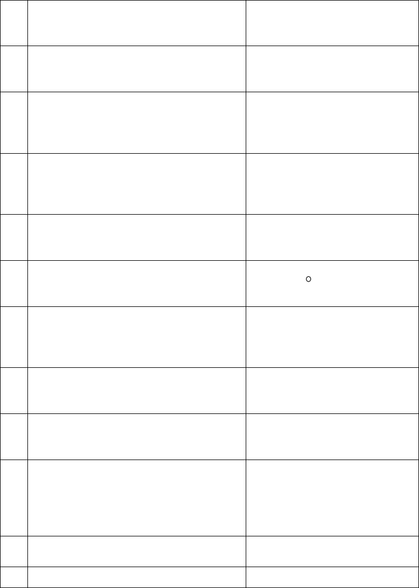

Qanday yoruglik nurlari
uchrashganda interferensiya
hodisasi ro’y beradi?
Kogerent yoruglik nurlari
Dipolning elektr momenti
formulasini va o’lchov birligini
ko’rsating?
Yoruglikning to’lqin uzunligi deb
nimaga aytiladi?
Yoruglik to’lqinining bir xil
fazada tebranayotgan 2 ta eng
yaqin nuqtalari orasidagi
masofaga
Izotrop dielektriklarda qutblanish
vektori bilan maydon
kuchlanganligi orasidagi bog’lanish
formulasini ko’rsating?
Qanday prizmada tabiiy nurdan
qutblangan nurni hosil qilishi
mumkin?
Dielektrik ichidagi ixtiyoriy yopiq
sirt orqali qutblanish vektorining
oqimi formulasini ko’rsating?
Yorug’lik nurlarining havodan
shishaga o’tishida qaysi rangli
yoruglik uchun shishaning sindirish
ko’rsatkichi eng katta bo’ladi?
Elektr maydon induksiyasi va
kuchlanganligi orasidagi bog’lanish
formulasini ko’rsating?
Yashil shisha orqali qizil harflarga
qaralsa ular qanday rangda
ko’rinadi?
O’tkazgichga berilgan zaryad
miqdori bilan bu zaryad tufayli
vujudga kelgan o’tkazgichning
potensiali orasidagi bog’lanish
formulasini ko’rsating?
Fotoelement qanday vazifani
bajaradi?
Yorug’lik energiyasini elektr
energiyasiga aylantirib beradi
Sharsimon o’tkazgichning elektr